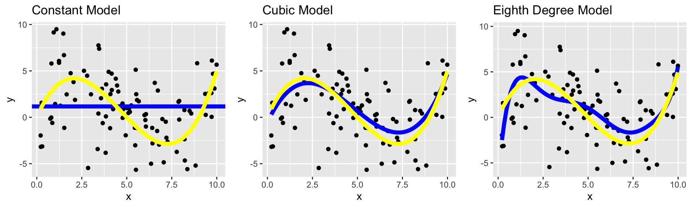
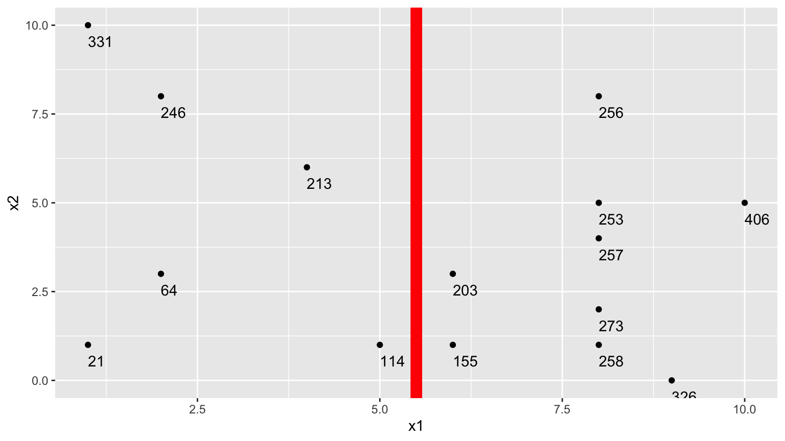
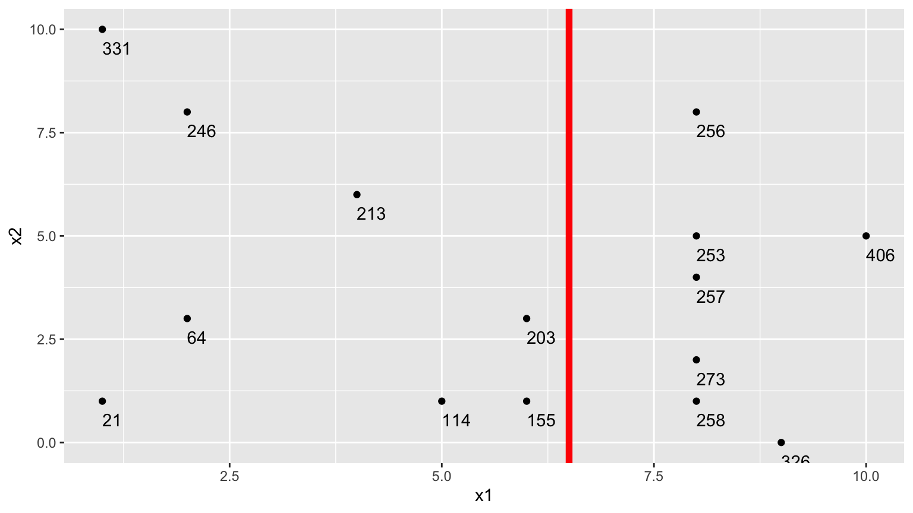

Chapter 7 Predictive Modeling
Learning Outcomes:
- Explain how prediction error changes, depending on model complexity, for both training data and test data.
- Explain the variance bias tradeoff, and identify situations when predictions might be impacted by either variance or bias.
- Describe how overfitting can impact prediction accuracy.
- Explain how and why we use cross-validation in predictive modeling.
- Compare and contrast Ridge regression and ordinary least squares regression.
- Explain the role of the parameter \(\lambda\) is Ridge regression.
- Given possible sets of regression coefficients, determine which would be optimal, using either ordinary least squares, Ridge regression, or Lasso regression.
- Compare and contrast the assumptions made in decision trees, to those in the normal error regression model.
- Given possible splits for a node in a decision tree, determine which is optimal.
- Explain how the depth of a tree impacts prediction variance and bias, and overfitting.
- Describe how decision trees in a random forest differ from one another.
- Explain the process of fitting a polynomial spline to data, and the impact the the number of knots has on the process.
- Explain the assumptions made in predictive modeling, and identify situations where these assumptions might be inappropriate or problematic from an ethical standpoint.
7.1 Modeling for Prediction
7.1.1 Overview
We’ve previously learned how to build models for the purpose of interpretation, when our primary focus is on understanding relationships between variables in the model. In this chapter, we’ll examine how to build models for situations when we are not interested in understanding relationships between variables, and instead care only about making the most accurate predictions possible.
We’ve seen that when we model for interpretation, we encounter a tradeoff between model complexity and interpretability. We wanted to choose a model that is complex enough to reasonably approximate the structure of the underlying data, but at the same time, not so complicated that it becomes hard to interpret. When modeling for prediction, we don’t need to worry about interpretability, which can sometimes make more complex models more desirable. Nevertheless, we’ll encounter a different kind of tradeoff, involving model complexity, that we’ll have to think about, and we’ll see that more complex models do not always lead to better predictions.
Predictive Modeling Vocabulary
The new data on which we make predictions is called test data.
The data used to fit the model is called training data.
In the training data, we know the values of the explanatory and response variables. In the test data, we know only the values of the explanatory variables and want to predict the values of the response variable.
7.1.2 Illustration of Predictive Modeling
The illustration shows observations from a simulated dataset consisting of 100 observations of a single explanatory variable \(x\), and response variable \(y\). We want to find a model that captures the trend in the data and will be best able to predict new values of y, for given x.
We’ll fit several different polynomial models to the data, increasing in complexity from the most simple model we could possibly use, a constant model, to a very complex eighth degree polynomial model.
Constant Model to Sample Data

Linear Model to Sample Data
Quadratic Model

Degree 3, 4, and 8 Models
We continue exploring higher order polynomial models. The blue curve represents a third degree (cubic) polynomial model, while the red curve represents a fourth degree (quartic) model and the green represents an eighth degree model.

We see that the flexibility of the model increases as we add higher-order terms. The curve is allowed to have more twists and bends. For higher-order, more complex models, individual points have more influence on the shape of the curve. This can be both a good and bad thing, as it allows the model to better bend and fit the data, but also makes it susceptible to the influence of outliers.
7.1.3 Predicting New Data
Now, suppose we have a new dataset of 100, x-values, and want to predict \(y\). The first 5 rows of the new dataset are shown
| x | Prediction |
|---|---|
| 3.196237 | ? |
| 1.475586 | ? |
| 5.278882 | ? |
| 5.529299 | ? |
| 7.626731 | ? |
We fit polynomial models of degree 0 through 8 to the data. Note that although we did not show the 5th through 7th degree models in our illustrations, we’ll still fit these to the data.
Sim_M0 <-lm(data=Sampdf, y~1)
Sim_M1 <-lm(data=Sampdf, y~x)
Sim_M2 <- lm(data=Sampdf, y~x+I(x^2))
Sim_M3 <- lm(data=Sampdf, y~x+I(x^2)+I(x^3))
Sim_M4 <- lm(data=Sampdf, y~x+I(x^2)+I(x^3)+I(x^4))
Sim_M5 <- lm(data=Sampdf, y~x+I(x^2)+I(x^3)+I(x^4)+I(x^5))
Sim_M6 <- lm(data=Sampdf, y~x+I(x^2)+I(x^3)+I(x^4)+I(x^5)+I(x^6))
Sim_M7 <- lm(data=Sampdf, y~x+I(x^2)+I(x^3)+I(x^4)+I(x^5)+I(x^6)+I(x^7))
Sim_M8 <- lm(data=Sampdf, y~x+I(x^2)+I(x^3)+I(x^4)+I(x^5)+I(x^6)+I(x^7)+I(x^8))We predict the values of the new observations, using each of the 9 models.
Newdf$Deg0Pred <- predict(Sim_M0, newdata=Newdf)
Newdf$Deg1Pred <- predict(Sim_M1, newdata=Newdf)
Newdf$Deg2Pred <- predict(Sim_M2, newdata=Newdf)
Newdf$Deg3Pred <- predict(Sim_M3, newdata=Newdf)
Newdf$Deg4Pred <- predict(Sim_M4, newdata=Newdf)
Newdf$Deg5Pred <- predict(Sim_M5, newdata=Newdf)
Newdf$Deg6Pred <- predict(Sim_M6, newdata=Newdf)
Newdf$Deg7Pred <- predict(Sim_M7, newdata=Newdf)
Newdf$Deg8Pred <- predict(Sim_M8, newdata=Newdf)In fact, since these data were simulated, we know the true value of \(y\), so we can compare the predicted values to the true ones.
kable(Newdf %>% dplyr::select(-c(samp)) %>% round(2) %>% head(5))| x | y | Deg0Pred | Deg1Pred | Deg2Pred | Deg3Pred | Deg4Pred | Deg5Pred | Deg6Pred | Deg7Pred | Deg8Pred | |
|---|---|---|---|---|---|---|---|---|---|---|---|
| 108 | 5.53 | 5.49 | 1.17 | 1.05 | 0.41 | -0.14 | -0.30 | 0.10 | 0.40 | 0.25 | 0.31 |
| 4371 | 2.05 | 3.92 | 1.17 | 1.89 | 2.02 | 3.66 | 3.95 | 4.26 | 3.82 | 3.37 | 3.49 |
| 4839 | 3.16 | 1.46 | 1.17 | 1.63 | 1.29 | 3.24 | 3.35 | 2.78 | 2.24 | 2.15 | 2.07 |
| 6907 | 2.06 | 6.79 | 1.17 | 1.89 | 2.02 | 3.66 | 3.95 | 4.25 | 3.80 | 3.36 | 3.47 |
| 7334 | 2.92 | -1.03 | 1.17 | 1.68 | 1.42 | 3.43 | 3.60 | 3.14 | 2.51 | 2.31 | 2.25 |
7.1.4 Evaluating Predictions - RMSPE
For quantitative response variables, we can evaluate the predictions by calculating the average of the squared differences between the true and predicted values. Often, we look at the square root of this quantity. This is called the Root Mean Square Prediction Error (RMSPE).
\[ \text{RMSPE} = \sqrt{\displaystyle\sum_{i=1}^{n'}\frac{(y_i-\hat{y}_i)^2}{n'}}, \]
where \(n'\) represents the number of new cases being predicted.
We calcuate RMSPE for each of the 9 models.
RMSPE0 <- sqrt(mean((Newdf$y-Newdf$Deg0Pred)^2))
RMSPE1 <- sqrt(mean((Newdf$y-Newdf$Deg1Pred)^2))
RMSPE2 <- sqrt(mean((Newdf$y-Newdf$Deg2Pred)^2))
RMSPE3 <- sqrt(mean((Newdf$y-Newdf$Deg3Pred)^2))
RMSPE4 <- sqrt(mean((Newdf$y-Newdf$Deg4Pred)^2))
RMSPE5 <- sqrt(mean((Newdf$y-Newdf$Deg5Pred)^2))
RMSPE6 <- sqrt(mean((Newdf$y-Newdf$Deg6Pred)^2))
RMSPE7 <- sqrt(mean((Newdf$y-Newdf$Deg7Pred)^2))
RMSPE8 <- sqrt(mean((Newdf$y-Newdf$Deg8Pred)^2))| Degree | RMSPE |
|---|---|
| 0 | 4.051309 |
| 1 | 3.849624 |
| 2 | 3.726767 |
| 3 | 3.256592 |
| 4 | 3.283513 |
| 5 | 3.341336 |
| 6 | 3.346908 |
| 7 | 3.370821 |
| 8 | 3.350198 |
The third degree model did the best at predicting the new data.
Notice that making the model more complex beyond third degree not only didn’t help, but actually hurt prediction accuracy.
7.1.5 Training Data Error
Now, let’s examine the behavior if we had fit the models to the data, instead of the test data.
RMSE0 <- sqrt(mean(Sim_M0$residuals^2))
RMSE1 <- sqrt(mean(Sim_M1$residuals^2))
RMSE2 <- sqrt(mean(Sim_M2$residuals^2))
RMSE3 <- sqrt(mean(Sim_M3$residuals^2))
RMSE4 <- sqrt(mean(Sim_M4$residuals^2))
RMSE5 <- sqrt(mean(Sim_M5$residuals^2))
RMSE6 <- sqrt(mean(Sim_M6$residuals^2))
RMSE7 <- sqrt(mean(Sim_M7$residuals^2))
RMSE8 <- sqrt(mean(Sim_M8$residuals^2))Degree <- 0:8
Test <- c(RMSPE0, RMSPE1, RMSPE2, RMSPE3, RMSPE4, RMSPE5, RMSPE6, RMSPE7, RMSPE8)
Train <- c(RMSE0, RMSE1, RMSE2, RMSE3, RMSE4, RMSE5, RMSE6, RMSE7, RMSE8)
RMSPEdf <- data.frame(Degree, Test, Train)
RMSPEdf## Degree Test Train
## 1 0 4.051309 3.431842
## 2 1 3.849624 3.366650
## 3 2 3.726767 3.296821
## 4 3 3.256592 2.913233
## 5 4 3.283513 2.906845
## 6 5 3.341336 2.838738
## 7 6 3.346908 2.809928
## 8 7 3.370821 2.800280
## 9 8 3.350198 2.799066Notice that the most complex model achieves the best performance on the training data, but not on the test data.
As the model complexity grows, the model will always fit the training data better, but that does not mean it will perform better on new data. It is possible to start modeling noise, rather than true signal in the training data, which hurts the accuracy of the model when applied to new data.
7.1.6 Graph of RMSPE
- Training error decreases as model becomes more complex
- Testing error is lowest for the 3rd degree model, then starts to increase again
7.1.7 Best Model
Of the models we looked at, the third degree model does the best. The estimates of its coefficients are shown below.
summary(Sim_M3)##
## Call:
## lm(formula = y ~ x + I(x^2) + I(x^3), data = Sampdf)
##
## Residuals:
## Min 1Q Median 3Q Max
## -8.9451 -1.7976 0.1685 1.3988 6.8064
##
## Coefficients:
## Estimate Std. Error t value Pr(>|t|)
## (Intercept) -0.54165 1.26803 -0.427 0.670221
## x 4.16638 1.09405 3.808 0.000247 ***
## I(x^2) -1.20601 0.25186 -4.788 0.00000610 ***
## I(x^3) 0.08419 0.01622 5.191 0.00000117 ***
## ---
## Signif. codes: 0 '***' 0.001 '**' 0.01 '*' 0.05 '.' 0.1 ' ' 1
##
## Residual standard error: 2.973 on 96 degrees of freedom
## Multiple R-squared: 0.2794, Adjusted R-squared: 0.2569
## F-statistic: 12.41 on 3 and 96 DF, p-value: 0.0000006309In fact, the data were generated from the model \(y_i = 4.5x - 1.4x^2 + 0.1x^3 + \epsilon_i\), where \(\epsilon_i\sim\mathcal{N}(0,3)\)
We compare the true expected response curve (in yellow) to the estimates from the various polynomial models.
The 8th degree model performs worse than the cubic. The extra terms cause the model to be “too flexible,†and it starts to model random fluctuations (noise) in the training data, that do not capture the true trend for the population. This is called overfitting.

7.2 Variance-Bias Tradeoff
7.2.1 What Contributes to Prediction Error?
Suppose \(Y_i = f(x_i) + \epsilon_i\), where \(\epsilon_i\sim\mathcal{N}(0,\sigma)\).
Let \(\hat{f}\) represent the function of our explanatory variable(s) \(x^*\) used to predict the value of response variable \(y^*\). Thus \(\hat{y}^* = f(x^*)\).
There are three factors that contribute to the expected value of \(\left(y^* - \hat{y}\right)^2 = \left(y^* - \hat{f}(x^*)\right)^2\).
Bias associated with fitting model: Model bias pertains to the difference between the true response function value \(f(x^*)\), and the average value of \(\hat{f}(x^*)\) that would be obtained in the long run over many samples.
- for example, if the true response function \(f\) is cubic, then using a constant, linear, or quadratic model would result in biased predictions for most values of \(x^*\).Variance associated with fitting model: Individual observations in the training data are subject to random sampling variability. The more flexible a model is, the more weight is put on each individual observation increasing the variance associated with the model.
Variability associated with prediction: Even if we knew the true value \(f(x^*)\), which represents the expected value of \(y^*\) given \(x=x^*\), the actual value of \(y^*\) will vary due to random noise (i.e. the \(\epsilon_i\sim\mathcal{N}(0,\sigma)\) term).
7.2.2 Variance and Bias
The third source of variability cannot be controlled or eliminated. The first two, however are things we can control. If we could figure out how to minimize bias while also minimizing variance associated with a prediction, that would be great! But…
The constant model suffers from high bias. Since it does not include a linear, quadratic, or cubic term, it cannot accurately approximate the true regression function.
The Eighth degree model suffers from high variance. Although it could, in theory, approximate the true regression function correctly, it is too flexible, and is thrown off because of the influence of individual points with high degrees of variability.

7.2.3 Variance-Bias Tradeoff
As model complexity (flexibility) increases, bias decreases. Variance, however, increases.

In fact, it can be shown that:
\(\text{Expected RMSPE} = \text{Variance} + \text{Bias}^2\)
Our goal is the find the “sweetspot†where expected RMSPE is minimized.
7.2.4 Modeling for Prediction
- When our purpose is purely prediction, we don’t need to worry about keeping the model simple enough to interpret.
- Goal is to fit data well enough to make good predictions on new data without modeling random noise in the training (overfitting)
- A model that is too simple suffers from high bias
- A model that is too complex suffers from high variance and is prone to overfitting
- The right balance is different for every dataset
- Measuring error on data used to fit the model (training data) does not accurately predict how well model will be able to predict new data (test data)
7.2.5 Cross-Validation
We’ve seen that training error is not an accurate approximation of test error. Instead, we’ll approximate test error, by setting aside a set of the training data, and using it as if it were a test set. This process is called cross-validation, and the set we put aside is called the validation set.
- Partition data into disjoint sets (folds). Approximately 5 folds recommended.
- Build a model using 4 of the 5 folds.
- Use model to predict responses for remaining fold.
- Calculate root mean square error \(RMSPE=\displaystyle\sqrt{\frac{\sum((\hat{y}_i-y_i)^2)}{n'}}\).
- Repeat for each of 5 folds.
- Average RMSPE values across folds.
If computational resources permit, it is often beneficial to perform CV multiple times, using different sets of folds.

7.2.7 CV in R
The train function in the caret R package performs cross validation automatically. We’ll use it to compare five different models for house prices among a dataset of 1,000 houses sold in Ames, IA between 2006 and 2010.
We’ll consider six different models of (mostly) increasing complexity.
library(tidyverse)
Train_Data <- read_csv("Ames_Train_Data.csv") # Load data
library(caret) # load caret package# set cross-validation settings - use 10 repeats of 10-fold CV
control <- trainControl(method="repeatedcv", number=10, repeats=10, savePredictions = "all" )
# define models
# set same random seed before each model to ensure same partitions are used in CV, making them comparable
set.seed(10302023)
model1 <- train(data=Train_Data,
SalePrice ~ `Overall Qual` ,
method="lm", trControl=control)
set.seed(10302023)
model2 <- train(data=Train_Data,
SalePrice ~ `Overall Qual` + `Gr Liv Area` + `Garage Area`,
method="lm", trControl=control)
set.seed(10302023)
model3 <- train(data=Train_Data, SalePrice ~ `Overall Qual` +
`Gr Liv Area` + `Garage Area` +
`Neighborhood` + `Bldg Type`,
method="lm", trControl=control)
set.seed(10302023)
model4 <- train(data=Train_Data, SalePrice ~ `Overall Qual`
+ `Gr Liv Area` + `Garage Area`
+ `Neighborhood` + `Bldg Type` + `Year Built`,
method="lm", trControl=control)
set.seed(10302023)
model5 <- train(data=Train_Data, SalePrice ~ `Overall Qual` +
`Gr Liv Area` + `Garage Area` + `Neighborhood` +
`Bldg Type` + `Year Built` + I(`Overall Qual`^2) +
I(`Gr Liv Area`^2) + I(`Garage Area`^2) +
I(`Year Built`^2), method="lm", trControl=control)
set.seed(10302023)
model6 <- train(data=Train_Data, SalePrice ~ ., method="lm", trControl=control) # include everything linearly
# Calculate RMSPE for each model
RMSPE1 <- sqrt(mean((model1$pred$obs-model1$pred$pred)^2))
RMSPE2 <- sqrt(mean((model2$pred$obs-model2$pred$pred)^2))
RMSPE3 <- sqrt(mean((model3$pred$obs-model3$pred$pred)^2))
RMSPE4 <- sqrt(mean((model4$pred$obs-model4$pred$pred)^2))
RMSPE5 <- sqrt(mean((model5$pred$obs-model5$pred$pred)^2))
RMSPE6 <- sqrt(mean((model6$pred$obs-model6$pred$pred)^2))RMSPE1## [1] 51710.58RMSPE2## [1] 44192.34RMSPE3## [1] 38212.96RMSPE4## [1] 38016.67RMSPE5## [1] 38245.46RMSPE6## [1] 40586.14We see that in this case, model M4 performed the best on the hold-out data. We should use Model 4 to make predictions on new data over the other models seen here. It is likely that there are better models out there than model 4, likely with complexity somewhere between that of model 4 and models 5 and 6. Perhaps you can find one.
Once we have our preferred model, we can read in our test data and make predictions, and create a csv file containing the predictions, using the code below.
TestData <- read_csv("Ames_Test_Data.csv")
predictions <- predict(model1, newdata=TestData) # substitute your best model
write.csv(predictions, file = "predictions.csv")7.3 Ridge Regression
7.3.1 Complexity in Model Coefficients
We’ve thought about complexity in terms of the number of terms we include in a model, as well as whether we include quadratic terms and higher order terms and interactions. We can also think about model complexity in terms of the coefficients \(b_1, \ldots, b_p\). Larger values of \(b_1, \ldots, b_p\) are associated with more complex models. Smaller values of \(b_1, \ldots, b_p\) are associated with less complex models. When \(b_j=0\), this mean variable \(j\) is not used in the model.
To illustrate, we fit a regression model to the Ames housing dataset, which includes 71 possible explanatory variables, in addition to price.
set.seed(10302021)
samp <- sample(1:nrow(ames_raw), 1000)
Train_Data <- ames_raw[samp,]The full list of coefficient estimates is shown below.
M_OLS <- lm(data=Train_Data, SalePrice ~ .)
M_OLS$coefficients## (Intercept) `Overall Qual` `Year Built`
## -14136063.8944779 6975.9249580 494.5819845
## `Mas Vnr Area` `Central Air`Y `Gr Liv Area`
## 33.3816934 -3745.3629147 37.2290416
## `Lot Frontage` `1st Flr SF` `Bedroom AbvGr`
## -14.9594204 13.3690338 -2353.0379012
## `TotRms AbvGrd` Order PID
## 914.5594852 9.0730317 0.7938731
## `MS SubClass`030 `MS SubClass`040 `MS SubClass`045
## 1747.3877587 5867.2885074 7182.7066393
## `MS SubClass`050 `MS SubClass`060 `MS SubClass`070
## -1330.0097462 -7400.8589386 -953.6999925
## `MS SubClass`075 `MS SubClass`080 `MS SubClass`085
## -10585.7402995 -6516.1314579 -6527.2337681
## `MS SubClass`090 `MS SubClass`120 `MS SubClass`160
## -21891.2260114 -20296.4699853 -34837.6663542
## `MS SubClass`180 `MS SubClass`190 `MS Zoning`C (all)
## -18822.1874094 -12421.4283083 -38785.6865317
## `MS Zoning`FV `MS Zoning`I (all) `MS Zoning`RH
## -23114.7182938 -17213.3331514 -13306.2219908
## `MS Zoning`RL `MS Zoning`RM `Lot Area`
## -17643.5478889 -24783.4465053 0.7407590
## StreetPave AlleyPave AlleyNA
## 37262.6393526 2527.1840221 29.0268338
## `Lot Shape`IR2 `Lot Shape`IR3 `Lot Shape`Reg
## 8575.5874307 10397.8001841 2676.2691253
## `Land Contour`HLS `Land Contour`Low `Land Contour`Lvl
## 11318.1617440 -22452.1871122 12230.7109977
## `Lot Config`CulDSac `Lot Config`FR2 `Lot Config`FR3
## 10427.6521788 -12317.5423512 -14557.2814204
## `Lot Config`Inside `Land Slope`Mod `Land Slope`Sev
## -1168.2308323 10550.3766984 -24213.7593573
## NeighborhoodBlueste NeighborhoodBrDale NeighborhoodBrkSide
## 19001.1401867 20558.0541049 14314.5790198
## NeighborhoodClearCr NeighborhoodCollgCr NeighborhoodCrawfor
## 7379.3465594 -46.6307558 28775.4384686
## NeighborhoodEdwards NeighborhoodGilbert NeighborhoodGreens
## -7491.2919144 1951.6205024 4667.7592928
## NeighborhoodIDOTRR NeighborhoodMeadowV NeighborhoodMitchel
## 12473.1492830 18891.1264802 -9274.3206260
## NeighborhoodNAmes NeighborhoodNoRidge NeighborhoodNPkVill
## 1781.9098984 32109.4882191 19601.4137971
## NeighborhoodNridgHt NeighborhoodNWAmes NeighborhoodOldTown
## 34407.2004203 -3367.8475918 9857.0794600
## NeighborhoodSawyer NeighborhoodSawyerW NeighborhoodSomerst
## 6761.6510470 3945.8508858 20453.1722509
## NeighborhoodStoneBr NeighborhoodSWISU NeighborhoodTimber
## 44556.0799048 8518.9310629 1455.9163924
## NeighborhoodVeenker `Condition 1`Feedr `Condition 1`Norm
## 5759.5517197 -315.5372848 10041.9749570
## `Condition 1`PosA `Condition 1`PosN `Condition 1`RRAe
## 49498.8746234 15873.9313786 -11599.3284625
## `Condition 1`RRAn `Condition 1`RRNn `Condition 2`Feedr
## 7894.0460905 6045.1253614 7639.7933280
## `Condition 2`Norm `Condition 2`PosA `Condition 2`PosN
## 6804.6578647 1496.1296933 -224695.9129765
## `Condition 2`RRNn `Overall Cond` `Year Remod/Add`
## 20826.2553462 5652.4500122 115.1029835
## `Roof Style`Gable `Roof Style`Gambrel `Roof Style`Hip
## -983.4965913 -3775.4699187 -1020.9768277
## `Roof Style`Mansard `Roof Style`Shed `Roof Matl`CompShg
## 18711.8071355 -9552.0308918 671041.0670584
## `Roof Matl`Membran `Roof Matl`Tar&Grv `Roof Matl`WdShngl
## 738250.2085208 653237.7170668 757954.9462501
## `Mas Vnr Type`BrkFace `Mas Vnr Type`None `Mas Vnr Type`Stone
## -14297.1433973 -5178.2753573 -11764.3736400
## `Exter Qual`Fa `Exter Qual`Gd `Exter Qual`TA
## -21903.6214492 -37435.0319282 -40396.2768748
## `Exter Cond`Fa `Exter Cond`Gd `Exter Cond`Po
## -2499.1726078 9625.5181637 -9090.3355705
## `Exter Cond`TA FoundationCBlock FoundationPConc
## 10976.5039644 2136.6596942 4341.3771422
## FoundationSlab FoundationStone FoundationWood
## -8011.2100540 5209.4079083 -21499.8677282
## `Bsmt Qual`Fa `Bsmt Qual`Gd `Bsmt Qual`Po
## -19118.1141774 -13338.1127108 58476.8071349
## `Bsmt Qual`TA `Bsmt Qual`NA `Bsmt Exposure`Gd
## -14904.6825425 29237.6694620 8445.8558434
## `Bsmt Exposure`Mn `Bsmt Exposure`No `Bsmt Exposure`NA
## -5636.1528491 -5726.8655933 -28286.6797423
## `BsmtFin SF 1` `BsmtFin SF 2` `Bsmt Unf SF`
## 33.8127701 24.9524651 13.2017599
## HeatingGasW HeatingWall `Heating QC`Fa
## 3554.5996405 16477.8270033 -7277.0668485
## `Heating QC`Gd `Heating QC`Po `Heating QC`TA
## -760.5324990 -17982.8274261 -5710.2836368
## ElectricalFuseF ElectricalFuseP ElectricalMix
## 728.4351710 25345.9011297 51715.0815893
## ElectricalSBrkr `2nd Flr SF` `Bsmt Full Bath`
## -2872.3538220 12.4886691 -498.4665953
## `Bsmt Half Bath` `Full Bath` `Half Bath`
## 3026.8853409 3781.8172133 3333.8342115
## `Kitchen AbvGr` `Kitchen Qual`Fa `Kitchen Qual`Gd
## -12956.8475513 -7789.8981158 -13554.1557391
## `Kitchen Qual`TA FunctionalMaj2 FunctionalMin1
## -13298.5375890 -24570.4189413 -8664.3164291
## FunctionalMin2 FunctionalMod FunctionalTyp
## -12709.0598893 -14394.7176699 4206.1036385
## Fireplaces `Fireplace Qu`Fa `Fireplace Qu`Gd
## 11467.2013154 -12766.1232883 -14204.2309228
## `Fireplace Qu`Po `Fireplace Qu`TA `Fireplace Qu`NA
## -23140.9430388 -17684.2617792 -5555.0116338
## `Garage Type`Attchd `Garage Type`Basment `Garage Type`BuiltIn
## -1098.5463523 -698.4291295 -4596.8780051
## `Garage Type`CarPort `Garage Type`Detchd `Garage Yr Blt`
## -10478.5627774 -138.9775476 -61.6633788
## `Garage Finish`RFn `Garage Finish`Unf `Garage Cars`
## -4343.2684170 -1482.5096317 2990.4177680
## `Garage Area` `Garage Qual`Fa `Garage Qual`Gd
## 24.3013657 -70420.9028312 -51114.4969380
## `Garage Qual`Po `Garage Qual`TA `Garage Cond`Fa
## -134052.9764560 -67768.2607876 73986.1047213
## `Garage Cond`Gd `Garage Cond`Po `Garage Cond`TA
## 64104.4268776 112712.4021077 71259.2488661
## `Paved Drive`P `Paved Drive`Y `Wood Deck SF`
## 5257.0317668 2077.1863821 7.6414867
## `Open Porch SF` `Enclosed Porch` `3Ssn Porch`
## -16.2882422 -11.3738346 16.1217441
## `Screen Porch` `Pool Area` `Pool QC`TA
## 38.2573038 -106.8682816 24551.0371793
## `Pool QC`NA FenceGdWo FenceMnPrv
## -100661.2221692 3.7225602 1567.2382267
## FenceMnWw FenceNA `Misc Feature`Gar2
## -880.4035636 1297.2148680 545161.5427966
## `Misc Feature`Othr `Misc Feature`Shed `Misc Feature`NA
## 569599.2024080 551469.2569906 547892.2454607
## `Misc Val` `Mo Sold` `Yr Sold`
## 1.6361319 -262.1972861 5937.2902795
## `Sale Type`Con `Sale Type`ConLD `Sale Type`ConLI
## 7985.9754307 23972.1096774 9525.1931028
## `Sale Type`ConLw `Sale Type`CWD `Sale Type`New
## 11056.3865076 -9551.0936247 23118.1311002
## `Sale Type`Oth `Sale Type`VWD `Sale Type`WD
## 39733.0338449 -11729.6976216 4819.9397983
## `Sale Condition`AdjLand `Sale Condition`Alloca `Sale Condition`Family
## 41276.9513339 24461.6278440 404.8499384
## `Sale Condition`Normal `Sale Condition`Partial
## 1592.2625631 -4641.7581345Let’s focus on the first 10 rows.
head(coef(M_OLS),10) %>% round(3)## (Intercept) `Overall Qual` `Year Built` `Mas Vnr Area` `Central Air`Y
## -14136063.894 6975.925 494.582 33.382 -3745.363
## `Gr Liv Area` `Lot Frontage` `1st Flr SF` `Bedroom AbvGr` `TotRms AbvGrd`
## 37.229 -14.959 13.369 -2353.038 914.559If all coefficients in the model were 0, then we would be using the most simple constant model, and the prediction for the price of each house would be exactly the same as the overall mean. As \(b_j's\) get farther from 0, predictions begin move away from the overall mean and depend more and more on the values or categories of the explanatory variable(s) associated with individual houses. This creates a risk, however, of overfitting.
A way to combat this, other than dropping variables from the model, is to shrink some or all of the regression coefficients closer to 0, pushing predictions closer to the overall mean.
A statistical technique for doing this is called ridge regression.
7.3.2 Ridge Regression Penalty
We’ve seen that in ordinary least-squares regression, \(b_0, b_1, \ldots, b_p\) are chosen in a way that to minimizes
\[ \displaystyle\sum_{i=1}^n (y_i -\hat{y}_i)^2 = \displaystyle\sum_{i=1}^n (y_i -(b_0 + b_1x_{i1} + b_2{x_i2} + \ldots +b_px_{ip}))^2 \]
When \(p\) is large and we want to be careful of overfitting, a common approach is to add a “penalty term†to this function, to incentive choosing values of \(b_1, \ldots, b_p\) that are closer to 0, thereby “shrinking†the predictions toward the overall mean house price.
Specifically, we minimize:
\[ \begin{aligned} & \displaystyle\sum_{i=1}^n (y_i -\hat{y}_i)^2 + \lambda\displaystyle\sum_{j=1}^pb_j^2\\ = & \displaystyle\sum_{i=1}^n (y_i -(b_0 + b_1x_{i1} + b_2x_{i2} + \ldots + b_px_{ip}))^2 + \lambda\displaystyle\sum_{j=1}^pb_j^2 \end{aligned} \]
where \(\lambda\) is a pre-determined positive constant.
Larger values of \(b_j\) typically help the model better fit the training data, thereby making the first term smaller, but also make the second term larger. The idea is the find optimal values of \(b_0, b_1, \ldots, b_p\) that are large enough to allow the model to fit the data well, thus keeping the first term (SSR) small, while also keeping the penalty term small as well.
7.3.3 Choosing \(\lambda\)
The value of \(\lambda\) is predetermined by the user. The larger the value of \(\lambda\), the more heavily large \(b_j's\) are penalized. A value of \(\lambda=0\) corresponds to ordinary least-squares.
\[ \begin{aligned} Q=& \displaystyle\sum_{i=1}^n (y_i -\hat{y}_i)^2 + \lambda\displaystyle\sum_{j=1}^pb_j^2\\ = & \displaystyle\sum_{i=1}^n (y_i -(b_0 + b_1x_{i1} + b_2x_{i2} + \ldots + b_px_{ip}))^2 + \lambda\displaystyle\sum_{j=1}^pb_j^2 \end{aligned} \]
- Small values of \(\lambda\) lead to more complex models, with larger \(|b_j|\)’s.
- As \(\lambda\) increases, \(|b_j|\)’s shrink toward 0. The model becomes less complex, thus bias increases, but variance decreases.
- We can use cross validation to determine the optimal value of \(\lambda\)
When using ridge regression, it is important to standardize each explanatory variable (i.e. subtract the mean and divide by the standard deviation). This ensures each variable has mean 0 and standard deviation 1. Without standardizing the optimal choice of \(b_j\)’s would depend on scale, with variables with larger absolute measurements having more influence. We’ll standardize the response variable too. Though this is not strictly necessary, it doesn’t hurt. We can always transform back if necessary.
Standardization is performed using the scale command in R.
Train_sc <- Train_Data %>% mutate_if(is.numeric, scale)7.3.4 Ridge Regression on Housing Dataset
We’ll use the caret package to perform cross validation in order to find the optimal value of \(\lambda\). To use ridge regression, we specify method = "glmnet", and tuneGrid=expand.grid(alpha=0, lambda=l_vals). Note the alpha value can be changed to use other types of penalized regression sometimes used in predictive modeling, such as lasso or elastic net.
control = trainControl("repeatedcv", number = 10, repeats=10)
l_vals = 10^seq(-3, 3, length = 100) # test values between 1/1000 and 1000
set.seed(11162020)
Housing_ridge <- train(SalePrice ~ .,
data = Train_sc, method = "glmnet", trControl=control ,
tuneGrid=expand.grid(alpha=0, lambda=l_vals))Value of \(\lambda\) minimizing RMSPE:
Housing_ridge$bestTune$lambda## [1] 0.6135907We examine RMSPE on the withheld data as a function of \(\lambda\).
Using \(\lambda\) = 0.6135907, obtain the following set of ridge regression coefficients. Notice how the ridge coefficients are typically closer to 0 than the ordinary least squares coefficients, indicating a less complex model.
M_OLS_sc <- lm(data=Train_sc, SalePrice ~ .)
OLS_coef <- M_OLS_sc$coefficients
Ridge_coef <- coef(Housing_ridge$finalModel, Housing_ridge$bestTune$lambda)[,1]
df <- data.frame(OLS_coef[2:10], Ridge_coef[2:10])
names(df) <-c("OLS Coeff", "Ridge Coeff")
df## OLS Coeff Ridge Coeff
## `Overall Qual` 0.121728754 0.10435284
## `Year Built` 0.187102422 0.03451303
## `Mas Vnr Area` 0.080212607 0.06202880
## `Central Air`Y -0.046191694 0.04289126
## `Gr Liv Area` 0.237623291 0.00000000
## `Lot Frontage` -0.004290945 0.07967743
## `1st Flr SF` 0.069910650 0.01020597
## `Bedroom AbvGr` -0.022457937 0.07194208
## `TotRms AbvGrd` 0.017574153 0.01342224Predictions and residuals for the first six houses in the traning data, using ordinary least squares and ridge regression, are shown below.
library(glmnet)
MAT <- model.matrix(SalePrice~., data=Train_sc)
ridge_mod <- glmnet(x=MAT, y=Train_sc$SalePrice, alpha = 0, lambda=Housing_ridge$bestTune$lambda )y <- Train_sc$SalePrice
Pred_OLS <- predict(M_OLS_sc)
Pred_Ridge <- predict(ridge_mod, newx=MAT)
OLS_Resid <- y - Pred_OLS
Ridge_Resid <- y - Pred_Ridge
Resdf <- data.frame(y, Pred_OLS, Pred_Ridge, OLS_Resid, Ridge_Resid)
names(Resdf) <- c("y", "OLS Pred", "Ridge Pred", "OLS Resid", "Ridge Resid")
kable(head(Resdf))| y | OLS Pred | Ridge Pred | OLS Resid | Ridge Resid | |
|---|---|---|---|---|---|
| 859 | -0.6210832 | -0.4637429 | -0.4651589 | -0.1573403 | -0.1559243 |
| 1850 | 0.6800520 | 1.1897467 | 1.0528536 | -0.5096947 | -0.3728016 |
| 1301 | -0.4545873 | -0.4527781 | -0.4958630 | -0.0018092 | 0.0412758 |
| 981 | -0.6408161 | -0.6626212 | -0.7711186 | 0.0218051 | 0.1303025 |
| 2694 | -0.7937457 | -0.8679455 | -0.7543093 | 0.0741997 | -0.0394365 |
| 2209 | -0.7906625 | -0.6955254 | -0.6449779 | -0.0951370 | -0.1456845 |
7.3.5 Ridge vs OLS
In OLS, we choose \(b_0, b_1, \ldots, b_p\) are chosen in a way that minimizes
\[ \displaystyle\sum_{i=1}^n (y_i -\hat{y}_i)^2 = \displaystyle\sum_{i=1}^n (y_i -(b_0 + b_1x_{i1} + b_2x_{i2} + \ldots + b_px_{ip}))^2 \]
OLS: \(\displaystyle\sum_{i=1}^n (y_i -\hat{y}_i)^2\)
sum((y-Pred_OLS)^2)## [1] 56.94383Ridge: \(\displaystyle\sum_{i=1}^n (y_i -\hat{y}_i)^2\)
sum((y-Pred_Ridge)^2)## [1] 127.1331Not surprisingly the OLS model achieves smaller \(\displaystyle\sum_{i=1}^n (y_i -\hat{y}_i)^2\). This has to be true, since the OLS coefficients are chosen to minimize this quantity.
In ridge regression, \(b_0, b_1, \ldots, b_p\) are chosen in a way that minimizes
\[ \begin{aligned} Q=& \displaystyle\sum_{i=1}^n (y_i -\hat{y}_i)^2 + \lambda\displaystyle\sum_{j=1}^pb_j^2\\ = & \displaystyle\sum_{i=1}^n (y_i -(b_0 + b_1x_{i1} + b_2x_{i2} + \ldots + b_px_{ip}))^2 + \lambda\displaystyle\sum_{j=1}^pb_j^2 \end{aligned} \]
OLS: \(\displaystyle\sum_{i=1}^n (y_i -\hat{y}_i)^2 + \lambda\displaystyle\sum_{j=1}^pb_j^2\)
sum((y-Pred_OLS)^2) + 0.6136*sum(coef(M_OLS_sc)[-1]^2) ## [1] 373.1205Ridge: \(\displaystyle\sum_{i=1}^n (y_i -\hat{y}_i)^2 + \lambda\displaystyle\sum_{j=1}^pb_j^2\)
sum((y-Pred_Ridge)^2) + 0.6136*sum((Ridge_coef)[-1]^2)## [1] 130.3375We see that the ridge coefficients achieve a lower value of Q than the OLS ones.
7.3.6 Lasso and Elastic Net
Two other techniques that are similar to ridge regression are lasso and elastic net. Both also aim to avoid overfitting by shrinking regression coefficients toward 0 in a manner similar to ridge regression.
Lasso regression is very similar to ridge regression. Coefficients \(b_0, b_1, \ldots, b_p\) are chosen in a way that to minimizes
\[ \begin{aligned} & \displaystyle\sum_{i=1}^n (y_i -\hat{y}_i)^2 + \lambda\displaystyle\sum_{j=1}^p|b_j|\\ = & \displaystyle\sum_{i=1}^n (y_i -(b_0 + b_1x_{i1} + b_2x_{i2} + \ldots + b_px_{ip}))^2 + \lambda\displaystyle\sum_{j=1}^p|b_j| \end{aligned} \] Regression with an elastic net uses both ridge and lasso penalty terms and determines the values of \(b_0, b_1, \ldots, b_p\) by minimizing
\[ \begin{aligned} & \displaystyle\sum_{i=1}^n (y_i -\hat{y}_i)^2 + \lambda\displaystyle\sum_{j=1}^p|b_j|\\ = & \displaystyle\sum_{i=1}^n (y_i -(b_0 + b_1x_{i1} + b_2x_{i2} + \ldots + b_px_{ip}))^2 + \lambda_1\displaystyle\sum_{j=1}^pb_j^2+ \lambda_2\displaystyle\sum_{j=1}^p|b_j| \end{aligned} \]
7.4 Decision Trees
7.4.1 Basics of Decision Trees
A decision tree is a flexible alternative to a regression model. It is said to be nonparametric because it does not involve parameters like \(\beta_0, \beta_1, \ldots \beta_p\). A tree makes no assumption about the nature of the relationship between the response and explanatory variables, and instead allows us to learn this relationship from the data. A tree makes prediction by repeatedly grouping together like observations in the training data. We can make predictions for a new case, by tracing it through the tree, and averaging responses of training cases in the same terminal node.
Decision Tree Example:
We fit a decision tree to the Ames Housing dataset, using the rpart function in a package by the same name.
library(rpart)
library(rpart.plot)
tree <- rpart(SalePrice~., data=Train_Data, cp=0.04)
rpart.plot(tree, box.palette="RdBu", shadow.col="gray", nn=TRUE, cex=1, extra=1)
We see that the houses are first split based on whether or not their overall quality rating was less than 8. Each of the resulting nodes are then split again, using information from other explanatory variables. Each split partitions the data further, so that houses in the same node can be thought of as being similar to one another.
The predicted price of a House with overall quality 7, and was built in 1995 is $200,000.
The predicted price of a House overall quality 8 and 1,750 sq. ft. on the first floor is $370,000.
7.4.2 Partitioning in A Decision Tree
For a quantitative response variable, data are split into two nodes so that responses in the same node are as similar as possible, while responses in the different nodes are as different as possible.
Let L and R represent the left and right nodes from a possible split. Let \(n_L\) and \(n_R\) represent the number of observations in each node, and \(\bar{y}_L\) and \(\bar{y}_R\) represent the mean of the training data responses in each node.
For each possible split, involving an explanatory variable, we calculate:
\[ \displaystyle\sum_{i=1}^{n_L} (y_i -\bar{y}_L)^2 + \displaystyle\sum_{i=1}^{n_R} (y_i -\bar{y}_R)^2 \]
We choose the split that minimizes this quantity.
Partitioning Example
Consider a dataset with two explanatory variables, \(x_1\) and \(x_2\), and a response variable \(y\), whose values are shown numerically in the graph.
## [,1] [,2] [,3] [,4] [,5] [,6] [,7] [,8] [,9] [,10] [,11] [,12] [,13] [,14]
## x1 8 2 8 1 8 6 2 5 1 8 4 10 9 8
## x2 5 3 1 1 4 3 8 1 10 8 6 5 0 2
## y 253 64 258 21 257 203 246 114 331 256 213 406 326 273
## [,15]
## x1 6
## x2 1
## y 155The goal is to split up the data, using information about \(x_1\) and \(x_2\) in a way that makes the \(y\) values grouped together as similar as possible.
1. One Possible Split (\(x_1 < 5.5\))
We could split the data into 2 groups depending on whether \(x_1 < 5.5\).

We calcuate the mean y-value in each resulting node:
- \(\bar{y}_L = (331+246+213+21+64+114)/6 \approx 164.84\)
- \(\bar{y}_R = (203+155+256+253+257+273+258+326+406)/9 \approx 265.22\)
To measure measure the amount of deviation in the node, we calculate the sum of the squared difference between each individual value and the overall mean in each node.
\[ \begin{aligned} & \displaystyle\sum_{i=1}^{n_L} (y_i -\bar{y}_L)^2 \\ & =(331-164.83)^2+(246-164.33)^2 + \ldots+(114-164.33)^2 \\ & =69958.83 \end{aligned} \]
\[ \begin{aligned} \displaystyle\sum_{i=1}^{n_R} (y_i -\bar{y}_R)^2 \\ & =(203-265.22)^2+(155-265.22)^2 + \ldots+(406-265.22)^2 \\ & =39947.56 \end{aligned} \]
Adding together these two quantities, we obtain an overall measure of the squared deviations between observations in the same node.
- 69958.83 + 39947.56 = 109906.4
2.Second Possible Split (\(x_1 < 6.5\))
We could alternatively split the data into 2 groups depending on whether \(x_1 < 6.5\).

Using this split,
- \(\bar{y}_L = (331+246+213+21+64+114 + 203+155)/8 \approx 168.375\)
- \(\bar{y}_R = (256+253+257+273+258+326+406)/7 \approx 289.857\)
\[ \begin{aligned} & \displaystyle\sum_{i=1}^{n_L} (y_i -\bar{y}_L)^2 \\ & =(331-168.375)^2+(246-168.375)^2 + \ldots+(203-168.375)^2 \\ & =71411.88 \end{aligned} \]
\[ \begin{aligned} \displaystyle\sum_{i=1}^{n_R} (y_i -\bar{y}_R)^2 \\ & =(203-289.857)^2+(155-289.857)^2 + \ldots+(406-289.857)^2 \\ & =19678.86 \end{aligned} \]
The total squared deviation is:
- 71411.88 + 19678.86 = 91090.74
The split at \(x1 < 6.5\) is better than \(x_1<5.5\)
3. Third Possible Split (\(x_2 < 5.5\))
We could also split the data into 2 groups depending on whether \(x_2 < 5.5\).

Using this split,
- \(\bar{y}_L = (331+246+213+256)/4 \approx 261.5\)
- \(\bar{y}_R = (21 + 64 + \ldots + 406)/11 \approx 211.82\)
\[ \begin{aligned} & \displaystyle\sum_{i=1}^{n_L} (y_i -\bar{y}_L)^2 \\ & =(331-261.5)^2+(246-261.5)^2 + (213-261.5)^2+(256-261.5)^2 \\ & =7453 \end{aligned} \]
\[ \begin{aligned} \displaystyle\sum_{i=1}^{n_R} (y_i -\bar{y}_R)^2 \\ & =(21-211.82)^2+(64-211.82)^2 + \ldots+(406-211.82)^2 \\ & =131493.6 \end{aligned} \]
The sum of squared deviations is:
- 7453 + 131493.6 = 138946.6
Comparison of Splits
Of the three split’s we’ve calculated, \(\displaystyle\sum_{i=1}^{n_L} (y_i -\bar{y}_L)^2 + \displaystyle\sum_{i=1}^{n_R} (y_i -\bar{y}_R)^2\) is minimized using \(x_1 < 6.5\).
In fact, if we calculate all possible splits over \(x_1\) and \(x_2\), \(\displaystyle\sum_{i=1}^{n_L} (y_i -\bar{y}_L)^2 + \displaystyle\sum_{i=1}^{n_R} (y_i -\bar{y}_R)^2\) is minimized by splitting on \(x_1 < 6.5\)
Thus, we perform the first split in the tree, using \(x_1 < 6.5\).


7.4.3 Next Splits
Next, we find the best splits on the resulting two nodes. It turns out that the left node is best split on \(x_2 < 4.5\), and the right node is best split on \(x_1 < 8.5\).


7.4.4 Recursive Partitioning
Splitting continues until nodes reach a certain predetermined minimal size, or until change improvement in model fit drops below a predetermined value

7.4.5 Model Complexity in Trees
The more we partition data into smaller nodes, the more complex the model becomes. As we continue to partition, bias decreases, as cases are grouped with those that are more similar to themselves. On the other hand, variance increases, as there are fewer cases in each node to be averaged, putting more weight on each individual observation.
Splitting into too small of nodes can lead to drastic overfitting. In the extreme case, if we split all the way to nodes of size 1, we would get RMSE of 0 on the training data, but should certainly not expect RMSPE of 0 on the test data.
The optimal depth of the tree, or minimal size for terminal nodes can be determined using cross-validation. The rpart package uses a complexity parameter cp, which determines how much a split must improve model fit in order to be made. Smaller values of cp are associated with more complex tree models, since they allow splits even when model fit only improves by a little.
7.4.6 Cross-Validation on Housing Data
We’ll use caret to determine the optimal value of the cp parameter. We use method="rpart" to grow decision trees.
cp_vals = 10^seq(-8, 1, length = 100) # test values between 1/10^8 and 1
colnames(Train_sc) <- make.names(colnames(Train_sc))
set.seed(11162020)
Housing_Tree <- train(data=Train_sc, SalePrice ~ ., method="rpart", trControl=control,
tuneGrid=expand.grid(cp=cp_vals))The optimal value of cp is:
Housing_Tree$bestTune## cp
## 52 0.0004328761We plot RMSPE on the holdout data as a function of cp.
cp <- Housing_Tree$results$cp
RMSPE <- Housing_Tree$results$RMSE
ggplot(data=data.frame(cp, RMSPE), aes(x=cp, y=RMSPE))+geom_line() + xlim(c(0,0.001)) + ylim(c(0.475,0.485)) +
ggtitle("Regression Tree Cross Validation Results")
7.4.7 Comparing OLS, Lasso, Ridge, and Tree
set.seed(11162020)
Housing_OLS <- train(data=Train_sc, SalePrice ~ ., method="lm", trControl=control)
set.seed(11162020)
Housing_lasso <- train(SalePrice ~., data = Train_sc, method = "glmnet", trControl=control,
tuneGrid=expand.grid(alpha=1, lambda=l_vals))RMSPE on the standardized version of the response variable is displayed below for ordinary least squares, ridge regression, lasso regression, and a decistion tree.
min(Housing_OLS $results$RMSE)## [1] 0.5634392min(Housing_ridge$results$RMSE)## [1] 0.4570054min(Housing_lasso$results$RMSE)## [1] 0.4730672min(Housing_Tree$results$RMSE)## [1] 0.477414In this situation, the tree outperforms OLS, but does not do as well as lasso or ridge. The best model will vary depending on the nature of the data. We can use cross-validation to determine which model is likely to perform best in prediction.
7.4.8 Random Forest
A popular extension of a decision tree is a random forest. A random forest consists of many (often ~10,000) trees. Predictions are made by averaging predictions from individual trees.
- In order to ensure the trees are different from each other:
- each tree is grown from a different bootstrap sample of the training data.
- when deciding on a split, only a random subset of explanatory variables are considered.
- each tree is grown from a different bootstrap sample of the training data.
Growing deep trees ensures low bias. In a random forest, averaging across many deep trees decreases variance, while maintaining low bias.
7.5 Regression Splines
7.5.1 Regression Splines
We’ve seen that we can use polynomial regression to capture nonlinear trends in data.
- A regression spline is a piecewise function of polynomials.
Here we’ll keep thing simple by focusing on a spline with a single explanatory variable. Splines can also be used for multivariate data.
We’ll examine the use of splines on the car price prediction dataset.
We divide the data into a set of 75 cars, which we’ll use to train the model, and 35 cars, on which we’ll make and evaluate predictions.
The 75 cars in the training set are shown below.

7.5.2 Two Models with High Bias

The constant and linear models have high bias, as they are not complex enough to capture the apparent curvature in the relationship between price and acceleration time.
A cubic model, on the other hand might better capture the trend.
7.5.3 Cubic Splines
It’s possible that the behavior of the response variable might differ in different regions of the x-axis. A cubic spline allows us to fit different models in different regions of the x-axis.

The region boundaries are called knots
Cubic Spline with 5 Knots

Cubic Spline with 10 Knots

Cubic Spline with 20 Knots
Notice that as the number of knots increases, the model becomes more and more complex. We would not expect the relationship between price and acceleration time to look like it does in these more complicated pictures. It is likely that as the number of knots gets big, the model overfits the training data.

7.6 Summary and Comparision
In the previous sections, we’ve applied various predictive modeling techniques to predict house prices in Ames, IA. In each section, we’ve focused on an individual predictive technique (OLS, ridge/lasso regression, trees, splines), but in practice, we often test out these techniques together to find which is likely to perform best on a set of data. Here, we’ll go through the steps to test out and evaluate these techniques on the Ames Housing dataset.
There are no new statistical ideas presented in this section, just a synthesis of the preceding material. We leave out splines, since we did not discuss using splines in a multivariate setting, but we compare OLS, ridge and decision trees.
We use a subset of variables for illustrative purposes.
set.seed(10302021)
samp <- sample(1:nrow(ames_raw), 1000)
Houses <- ames_raw[samp,]New_Houses <- ames_raw <- ames_raw[-samp,]
New_Houses <- New_Houses[1:5, ]We’ll begin by doing some data preparation.
We standardize all explanatory variables in the training and new data. We do not standardize the response variable, price, so we can interpret predicted values more easily.
Houses_Combined <- rbind(Houses, New_Houses)
Houses_sc <- Houses_Combined %>% mutate_if(is.numeric, scale)
Houses_sc$SalePrice <- as.numeric(Houses_Combined$SalePrice)
Houses_sc_Train <- Houses_sc[1:1000, ]
Houses_sc_New <- Houses_sc[1001:1005, ]The Houses_sc_Train dataset contains standardized values for the 1000 houses in the training data. The first six rows are shown below.
head(Houses_sc_Train)## Overall.Qual Year.Built Central.Air Gr.Liv.Area X1st.Flr.SF
## 2771 -0.07619084 0.79212207 Y -0.003620472 -0.9340706
## 2909 -0.77229808 0.18658251 Y -0.392399656 -1.3891530
## 2368 -0.07619084 0.01837707 Y -0.938684253 -1.6993209
## 2604 -2.16451257 -1.89916487 Y -0.571836202 -1.1908489
## 669 -0.07619084 -0.14982836 Y -0.918746859 -0.3111924
## 1427 2.01213088 1.22945620 Y 0.528707949 1.5345608
## Bedroom.AbvGr TotRms.AbvGrd Lot.Area Lot.Shape Land.Contour
## 2771 0.1632018 -0.2910546 0.28570669 IR1 Lvl
## 2909 0.1632018 -0.9160758 -0.88703104 Reg Lvl
## 2368 0.1632018 -0.2910546 -0.98002927 Reg Lvl
## 2604 0.1632018 -0.2910546 0.04235132 Reg Lvl
## 669 0.1632018 -0.2910546 0.17314883 IR1 Lvl
## 1427 0.1632018 0.9589877 0.20650820 Reg Lvl
## Overall.Cond Exter.Qual Heating.QC Paved.Drive SalePrice
## 2771 -0.4680319 Gd Ex Y 187000
## 2909 0.4279149 TA TA Y 104500
## 2368 1.3238618 TA Ex Y 116000
## 2604 -1.3639788 TA TA Y 105000
## 669 -1.3639788 Fa Gd Y 163000
## 1427 -0.4680319 Ex Ex Y 395039The Houses_sc_New displays standardized values for the new houses that we’re trying to predict.
head(Houses_sc_New)## Overall.Qual Year.Built Central.Air Gr.Liv.Area X1st.Flr.SF Bedroom.AbvGr
## 2 -0.77229808 -0.3516749 Y -1.2058453 -0.6772922 -1.0608118
## 4 0.61991640 -0.1161873 Y 1.2145543 2.4091326 0.1632018
## 6 -0.07619084 0.8930453 Y 0.2057222 -0.6010214 0.1632018
## 7 1.31602364 0.9939686 Y -0.3246125 0.4464308 -1.0608118
## 8 1.31602364 0.6911988 Y -0.4402494 0.2989739 -1.0608118
## TotRms.AbvGrd Lot.Area Lot.Shape Land.Contour Overall.Cond Exter.Qual
## 2 -0.9160758 0.1877886 Reg Lvl 0.4279149 TA
## 4 0.9589877 0.1323496 Reg Lvl -0.4680319 Gd
## 6 0.3339665 -0.0094877 IR1 Lvl 0.4279149 TA
## 7 -0.2910546 -0.6164362 Reg Lvl -0.4680319 Gd
## 8 -0.9160758 -0.6062364 IR1 HLS -0.4680319 Gd
## Heating.QC Paved.Drive SalePrice
## 2 TA Y 105000
## 4 Ex Y 244000
## 6 Ex Y 195500
## 7 Ex Y 213500
## 8 Ex Y 191500Since the glmnet command requires training data to be entered as a matrix, we create versions of the datasets in matrix form.
Houses_sc$SalePrice[is.na(Houses$SalePrice)] <- 0 #can't take NA's when fitting model matrix, doesn't matter since only need x-coeffs
Houses_sc_Combined_MAT <- model.matrix(SalePrice~., data=rbind(Houses_sc))
Houses_sc_Train_MAT <- Houses_sc_Combined_MAT[1:1000, ]
Houses_sc_New_MAT <- Houses_sc_Combined_MAT[1001:1005, ]7.6.1 Modeling with OLS
We first fit an ordinary least squares regression model to the data.
Housing_OLS <- lm(data=Houses_sc_Train, SalePrice~ .)
coef(Housing_OLS)## (Intercept) Overall.Qual Year.Built Central.AirY Gr.Liv.Area
## 238908.0614 23368.4152 14036.2549 -4497.1153 29640.4606
## X1st.Flr.SF Bedroom.AbvGr TotRms.AbvGrd Lot.Area Lot.ShapeIR2
## 8320.1472 -5011.0485 1554.7785 7566.9377 1570.1676
## Lot.ShapeIR3 Lot.ShapeReg Land.ContourHLS Land.ContourLow Land.ContourLvl
## 19082.7508 -4566.5111 44704.8906 22406.5959 19096.4163
## Overall.Cond Exter.QualFa Exter.QualGd Exter.QualTA Heating.QCFa
## 7965.6704 -68750.2773 -62800.5804 -74028.3841 -3972.4036
## Heating.QCGd Heating.QCPo Heating.QCTA Paved.DriveP Paved.DriveY
## -4478.6876 -23000.4394 -5272.7136 -1901.9235 709.15327.6.2 Ridge Regression with Housing Data
Now, we’ll use ridge regression to predict insurance costs.
We use cross validation to determine the optimal value of lamba. We perform 10 repeats of 10-fold cross-validation. We test 100 lambda-values ranging from \(10^-5\) to \(10^5\).
control = trainControl("repeatedcv", number = 10, repeats=10)
l_vals = 10^seq(-5, 5, length = 100)
set.seed(2022)
Housing_ridge <- train( SalePrice ~ ., data = Houses_sc_Train, method = "glmnet", trControl=control , tuneGrid=expand.grid(alpha=0, lambda=l_vals))Housing_ridge$bestTune$lambda## [1] 6135.907We fit a model to the full training dataset using the optimal value of \(lambda\) .
ridge_mod <- glmnet(x=Houses_sc_Train_MAT, y=Houses_sc_Train$SalePrice, alpha = 0, lambda=Housing_ridge$bestTune$lambda )
coef(ridge_mod)## 26 x 1 sparse Matrix of class "dgCMatrix"
## s0
## (Intercept) 206079.5442
## (Intercept) .
## Overall.Qual 24716.6502
## Year.Built 12909.8224
## Central.AirY -1693.4832
## Gr.Liv.Area 24137.8185
## X1st.Flr.SF 10707.5001
## Bedroom.AbvGr -5034.2266
## TotRms.AbvGrd 5394.5170
## Lot.Area 7086.7613
## Lot.ShapeIR2 3322.3720
## Lot.ShapeIR3 18987.3176
## Lot.ShapeReg -5345.7478
## Land.ContourHLS 41239.7682
## Land.ContourLow 15011.2269
## Land.ContourLvl 12784.0351
## Overall.Cond 6560.4987
## Exter.QualFa -29042.5581
## Exter.QualGd -24942.6445
## Exter.QualTA -35102.6069
## Heating.QCFa -8118.6371
## Heating.QCGd -6380.1279
## Heating.QCPo -19693.6611
## Heating.QCTA -7645.0855
## Paved.DriveP -613.3798
## Paved.DriveY 1324.2704The regression coefficients are displayed together with the OLS coefficients in a data.frame.
Ridge_coef <- as.vector(ridge_mod$beta)[-1] #leave off intercept using [-1]
OLS_coef <- coef(Housing_OLS)[-1]
data.frame(OLS_coef, Ridge_coef)## OLS_coef Ridge_coef
## Overall.Qual 23368.4152 24716.6502
## Year.Built 14036.2549 12909.8224
## Central.AirY -4497.1153 -1693.4832
## Gr.Liv.Area 29640.4606 24137.8185
## X1st.Flr.SF 8320.1472 10707.5001
## Bedroom.AbvGr -5011.0485 -5034.2266
## TotRms.AbvGrd 1554.7785 5394.5170
## Lot.Area 7566.9377 7086.7613
## Lot.ShapeIR2 1570.1676 3322.3720
## Lot.ShapeIR3 19082.7508 18987.3176
## Lot.ShapeReg -4566.5111 -5345.7478
## Land.ContourHLS 44704.8906 41239.7682
## Land.ContourLow 22406.5959 15011.2269
## Land.ContourLvl 19096.4163 12784.0351
## Overall.Cond 7965.6704 6560.4987
## Exter.QualFa -68750.2773 -29042.5581
## Exter.QualGd -62800.5804 -24942.6445
## Exter.QualTA -74028.3841 -35102.6069
## Heating.QCFa -3972.4036 -8118.6371
## Heating.QCGd -4478.6876 -6380.1279
## Heating.QCPo -23000.4394 -19693.6611
## Heating.QCTA -5272.7136 -7645.0855
## Paved.DriveP -1901.9235 -613.3798
## Paved.DriveY 709.1532 1324.27047.6.3 Decision Tree
Now, we’ll predict house prices using using a decision tree.
First, we grow and display a small decision tree, by setting the cp parameter equal to 0.05.
tree <- rpart(SalePrice~., data=Houses_sc_Train, cp=0.05)
rpart.plot(tree, box.palette="RdBu", shadow.col="gray", nn=TRUE, cex=1, extra=1)Now we use cross-validation to determine the optimal value of the cp parameter. We use 10 repeats of 10-fold cross-validation. We test 1000 cp-values ranging from \(10^-5\) to \(10^5\).
cp_vals = 10^seq(-5, 5, length = 100)
colnames(Houses_sc_Train) <- make.names(colnames(Houses_sc_Train))
set.seed(2022)
Housing_Tree <- train(data=Houses_sc_Train, SalePrice ~ ., method="rpart", trControl=control,tuneGrid=expand.grid(cp=cp_vals))
Housing_Tree$bestTune## cp
## 4 0.00002009233We grow a full tree using the optimal cp value.
Housing_Best_Tree <- rpart(SalePrice~., data=Houses_sc_Train, cp=Housing_Tree$bestTune)7.6.4 Comparing Performance
We use cross-validation to compare the performance of the linear model, ridge regression model, and decision tree.
set.seed(2022)
Housing_OLS <- train(data=Houses_sc_Train, SalePrice ~ ., method="lm", trControl=control)min(Housing_OLS$results$RMSE)## [1] 35313.3min(Housing_ridge$results$RMSE)## [1] 35747.22min(Housing_Tree$results$RMSE)## [1] 33675.46The tree predictions give slightly lower RMSPE.
7.6.5 Predictions on New Data
We now predict the sale price of the five new houses using each technique.
Ordinary Least-Squares model:
OLS_pred <- predict(Housing_OLS, newdata=Houses_sc_New)
head(OLS_pred)## 2 4 6 7 8
## 114709.4 253695.8 195078.1 222117.6 242493.9Ridge regression model:
We use the Customers_sc_New_MAT dataset, since the glmnet package requires inputs in matrix form.
ridge_pred <- predict(ridge_mod, newx=Houses_sc_New_MAT)
head(ridge_pred)## s0
## 2 114950.4
## 4 259359.8
## 6 195288.0
## 7 226841.6
## 8 249064.8Decision tree:
tree_pred <- predict(Housing_Best_Tree, newdata=Houses_sc_New)
head(tree_pred)## 2 4 6 7 8
## 132926.5 287045.1 183978.6 207079.4 207079.47.7 Ethical Considerations in Predictive Modeling
7.7.1 Assumptions in Predictive Models
Like any other statistical technique, predictive inference (sometimes done through machine learning algorithms) depends on the validity of assumptions.
The response variable observed in the data is actually the thing we want to predict
Training/Test data representative of population of interest
Prediction accuracy is appropriate metric
Below are some examples of real uses of predictive inference in which some of these assumptions were violated, leading to inappropriate and unethical conclusions.
7.7.2 Amazon Hiring Algorithm
In 2014, Amazon began working on an algorithm to predict whether a job applicant would be suitable for hire for software developer positions, based on characteristics of their job application.
response variable: rating of candidate’s strength (1-5) explanatory variables: many variables based on information included on the resume (e.g. highest degree, major, GPA, college/university, prior job experiences, internships, frequency of certain words on resume, etc.)
The algorithm was trained using data from past applications, rated by humans, over the past 10 years. It could then be used to predict ratings of future job applicants.
According to [Reuters])(https://www.reuters.com/article/us-amazon-com-jobs-automation-insight/amazon-scraps-secret-ai-recruiting-tool-that-showed-bias-against-women-idUSKCN1MK08G),
“In effect, Amazon’s system taught itself that male candidates were preferable. It penalized resumes that included the word “women’s,†as in “women’s chess club captain.†And it downgraded graduates of two all-women’s colleges, according to people familiar with the matter.”
While the algorithm was intended to predict candidate quality, the response variable on the training data actually reflected biases in past hiring decisions, leading the algorithm to do the same.
7.7.3 Facial Recognition
Facial recognition technology is used by law enforcement surveillance, airport passenger screening, and employment and housing decisions. It has, however, been banned for use by police in some cities, including San Francisco and Boston, due to concerns about inequity and privacy.
Research has shown that although certain facial recognition algorithms achieve over 90% accuracy overall, accuracy rate is lower among subjects who are female, Black, or 18-30 years old.
This is likely due, at least in part, to the algorithms being trained primarily on data an images of people who are not members of these groups.
Although the algorithms might attain strong accuracy overall, it is inappropriate to evaluate them on this basis, without accounting for performance on subgroups in the population.
7.7.5 Modeling for Prediction
- Goal is to make the most accurate predictions possible.
- Not concerned with understanding relationships between variables. Not worried model being to complicated to interpret, as long as it yields good predictions.
- Aim for a model that best captures the signal in the data, without being thrown off by noise.
- Large number of predictors is ok
- Don’t make model so complicated that it overfits the data.
- Be sure that model is predicting what you intend it to
- Reflective of biases inherent in the data on which it was trained
7.7.4 Comments
The biases and assumptions noted above are not reasons to abandon predictive modeling, but rather flaws to be aware of and work to correct.
Predictive algorithms, are only as good as the data on which they are trained and the societies in which they are developed, and will reflect inherent biases. Thus, they should be used cautiously and with with human judgment, just like any other statistical technique.
Beware of statements like:
“The data say this!”
“The algorithm is objective.”
“The numbers don’t lie.”
Any data-driven analysis depends on assumptions, and sound judgment and awareness of context are required when assessing the validaty of conclusions drawn.